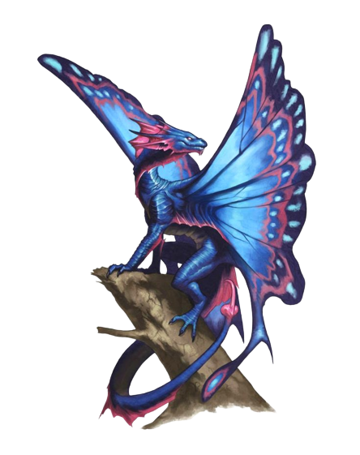

If you want to comtinue to play for any reason or just brag with your stats, you can return anytime.
Thank you for playing
This game was designed, drawn and coded by ChaosLabJ.
If you found any "features" or if you got any questions or suggestions, just message me on Discord
ChaosLabJ#0887